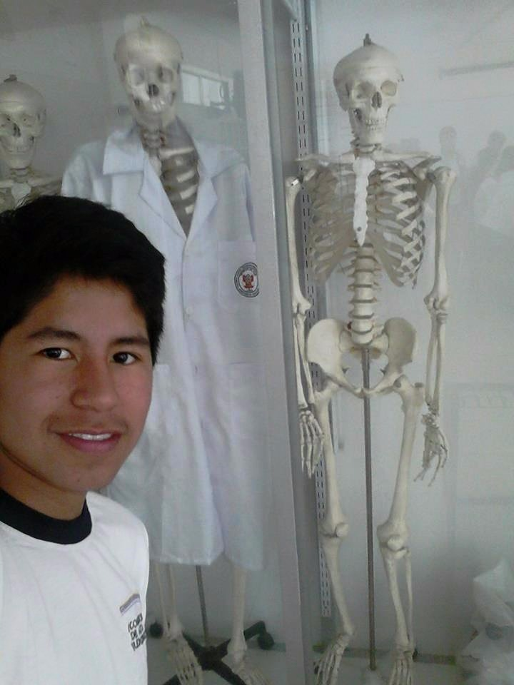
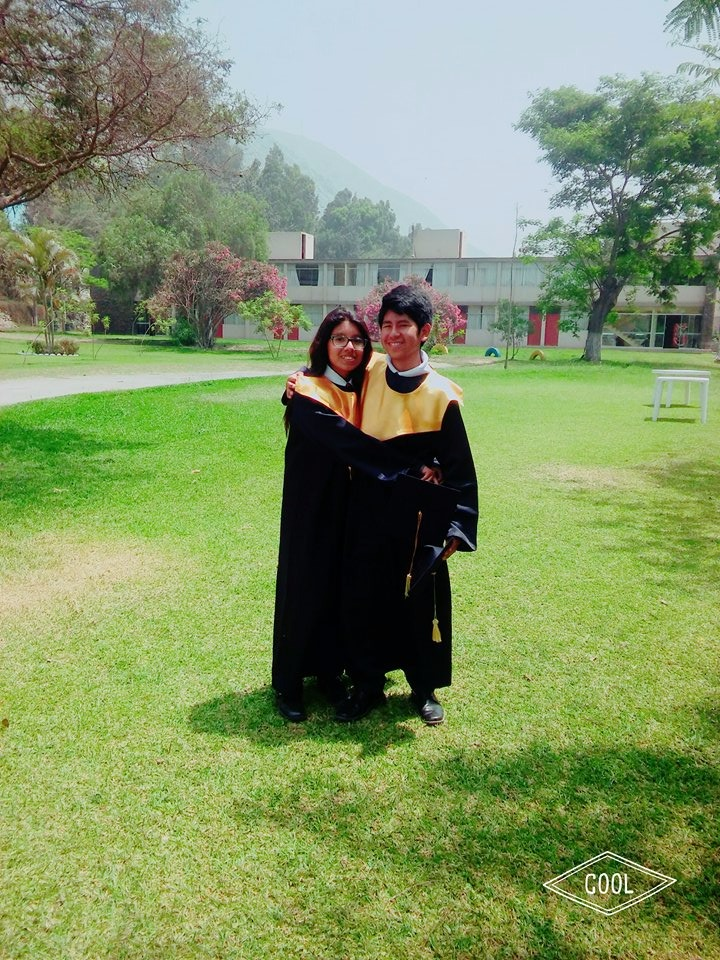
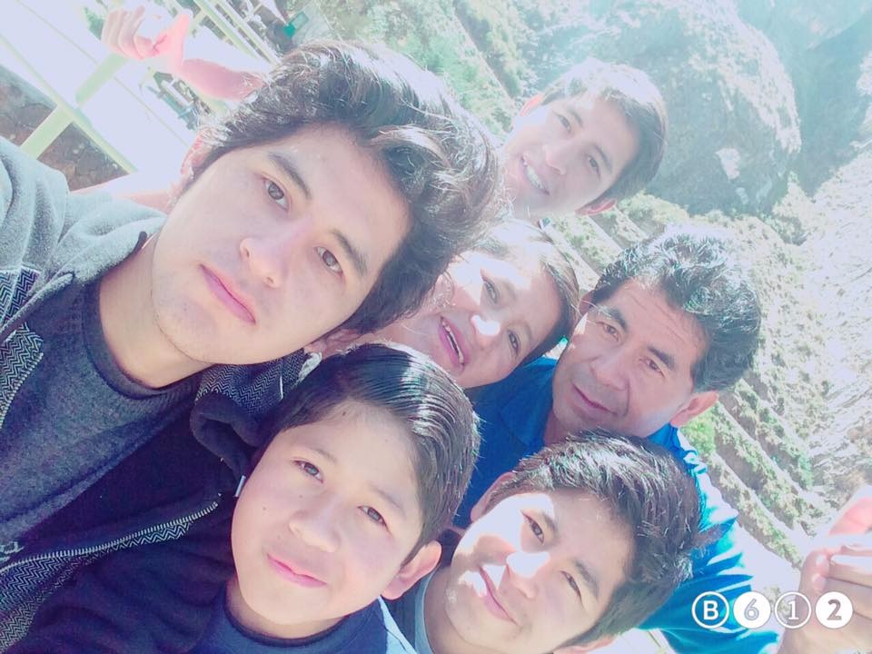

ARNOLD LUDWIG LAZARO RIQUEZ
|  | Hola, soy Arnold Ludwig Lazaro Riquez, provengo de Chupaca, Junin y actualmente estudio Ingeniería Química en UTEC (Universidad de Ingeniería y Tecnología) en Lima. Es una universidad realmente novedosa que apuesta por la tecnologia y las ciencias, ello ha permitido que pueda interezarme aun mas en el ambito de las ciencias y particularmente en la quimica. Actualmente llevo cursando el primer ciclo de mi carrera y el nivel de exigencia me parece interesante, lo que demanda tiempo de dedicación y una buena organización de los horarios. |
|
Tengo 17 años y me considero uan persona alegre y amigable en la que puedes confiar. Considero que la empatia es un aspecto fundamental en las personas y que todos deberiamos de practicarla. Me gusta mucho las ciencias sobre todo Fisica y Quimica, creo que ello ayudara a que los cursos de carrera sean muchos mas interezantes para mi. Me gusta mucho aprender nuevas cosas relacionadas al descubrimiento de fenomenos. Llevo cursando algunas clases como Desafíos Globales, Matematica, Ciencia de la computación, Comunicación e Inglés; además de los ya mencionados. |
 | |
|  | Por otro lado, mi familia esta conformada por 6 personas: Mi mama(Raquel), mi papa(Julio), mi hermanos(Luis, Danilo y Hayder) y finalmente yo. Me agrada pasar tiempo con ello, ya que durante el año no es muy frecuente de estemos juntos por largas temporadas debido al trabajo y estudios. |
|